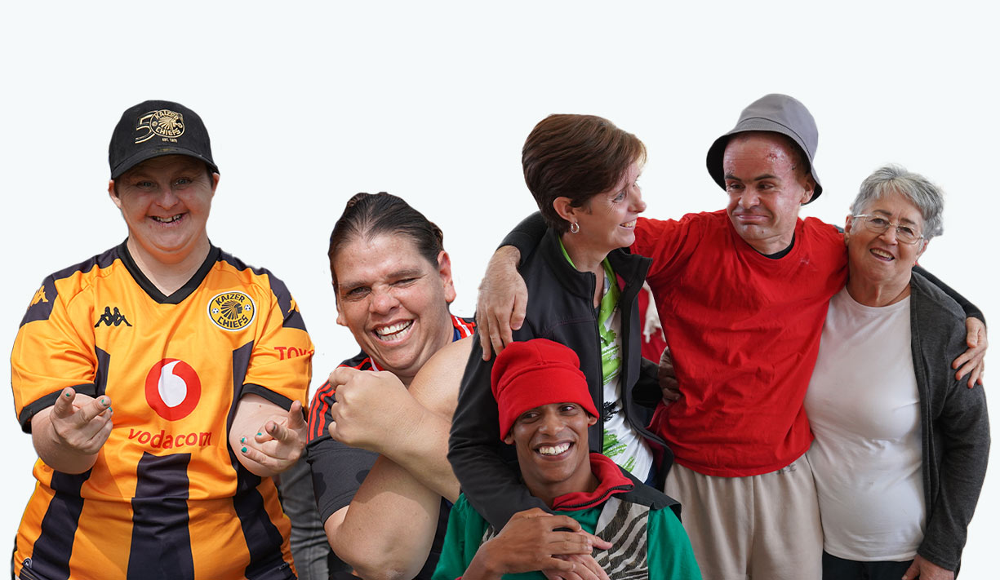

About LITTLE EDEN Society

LITTLE EDEN Society is a South African non-profit organisation that provides lifelong care and support for children and adults with profound intellectual disabilities.
The organisation was established in 1967 and has developed into a community that provides residential care, therapy, healthcare and support.
Our Mission
Our mission is to provide compassionate and professional lifelong care while protecting the dignity and quality of life of people with profound intellectual disabilities.
Our Vision
Our vision is to create a society where people with profound intellectual disabilities are valued, respected and given opportunities to live meaningful lives.
Our Locations
- Domitilla and Danny Hyams Home - Edenvale
- Elvira Rota Village - Bapsfontein